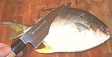
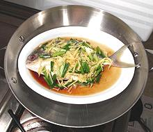
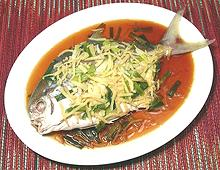
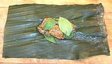
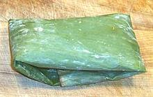
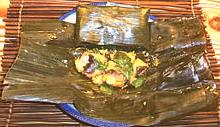
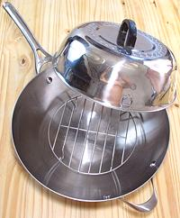
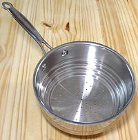
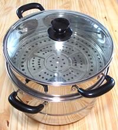
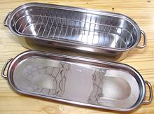

Fish Page
DISH METHOD

Cut Slits

Ready to Steam

Served
PACKETS METHOD

Marinated

Wrapped

Served
TOOLS

Steamer Wok

Steamer Pot

Steamer Pot

Fish Poacher "Re-purposed"
Procedure - Chinese Dish Method
More detail on this particular dish will be found in the recipe Steamed Fish Chinese Style.
- Select a fish the skin of which doesn't shrink badly.
- Scale and clean your fish. Cut deep diagonal slanted slits on both sides of the fish. This helps it absorb flavors and keeps it neat looking if the skin shrinks a bit.
- Rub the fish on both sides and inside with kosher salt.
- Whatever seasonings and vegetables the recipe calls for, stuff some into the body cavity.
- Place fish on the steaming dish, which will also be the serving dish.
- Drizzle with soysauce, rice wine, sesame oil, or whatever liquids the recipe calls for. Spread remaining seasonings and vegetables on top and let marinade for 20 minutes at room temperature or an hour in the fridge.
- Set up the steamer with an inch or more of water and place the plate on the rack. Add any additional ingredients called for in the recipe.
- Bring the water up to a rolling boil uncovered (this prevents too much condensation into the dish). Cover the steamer and steam at a moderate boil for 15 to 20 minutes depending on thickness of the fish.
- Serve immediately when done. All liquid that has gathered in the dish while steaming becomes part of the sauce.
Procedure - Packets Method
- Cut fish into bite size chunks and marinade per recipe (this Catfish was marinaded in fish sauce and red curry paste.
- Lay out a double layer of banana leaf (or foil or parchment paper depending on ethnicity and/or what you have).
- Fold the package up as tightly as you can without bursting or tearing the wrapper. It's best to put them seam side up so juices won't escape, so you may need to tie them or set a plate on top of them in the steamer.
- Stack packets in the steamer leaving plenty of channels for the steam to rise.
- Steam according to the table below
- Serving: You can serve the packets as steamed so each person can unwrap their own.
Steaming Times
| For steaming at or near sealevel
Add up all lines that apply | Example ** | |
|---|---|---|
| First inch of thickness | 10 minutes | 10 |
| Each additional 1/2 inch | 5 minutes | |
| Stuffed fish | 8 minutes | |
| Wrapped Packet | 10 minutes | 10 |
| on an uncovered dish | 10 minutes | |
| In a foil covered dish | 10 minutes | |
| TOTAL minutes | 20 | |
Hints
Know Your Fish:
(hints for many kinds of fish are in our Varieties of Fish page. Baking is more tolerant than other methods but you'll still want fish that stays together reasonably well.Dismantling:
If you intend to dismantle your fish into fillets before serving, selecting a fish that cooks firm is important. Even more important is that the fish be done all the way through to the backbone or you'll break it up trying to get the fillets loose.Done:
One test for doneness of a steamed fish is to pull out the dorsal (top) fin. If it doesn't pull out smoothly and easily the fish isn't done.Marinading:
If you marinade fish, let them soak up the marinade for at least 1 hour in the refrigerator or 20 minutes at room temperature. Salt and acid in the marinade will retard spoilage but don't leave the fish longer than 3/4 hour at room temperature. If you use leftover marinade for a sauce bring it to a high simmer for 5 minutes in a saucepan to make sure it's safe - it's been exposed to raw fish.
Tools
Wok Steamer:
The photo shows the excellent Calphalon #155 13" multi-ply wok outfitted with a steamer rack and 32cm stainless wok cover (both from a local Asian market). It provides sufficient space for a decent size dish.Steamer Pan:
This easily available steamer pan fits a saucepan you probably already have. It works well but is limited to steaming small items, such as the packets shown above. The photo specimen is is by Cuisinart and fits 8, 7, and 6 inch saucepans.Asian Steamer:
The traditional multi-level bamboo steamer trays set over boiling water in a wok are fading from use due to difficulty keeping them clean. They are being replaced by two and three level stainless steel pots. The photo specimen is a two level, with a steamer insert in the main pot and a tray on top. A three level would have a second tray on top. This example is 11 inches inside diameter, with headroom of 2 inches in the lower tray and 3 inches in the upper tray. These are generally usefully large, but have the disadvantage of taking a lot of space if you don't do steaming every day - but so do the bamboo trays. The bottom can be used as a simple pot, but is not multi-ply, which limits is usage.Fish Poacher - "Re-purposed":
My fish poacher (Progressive brand) has a basket that can be put in upside-down, and a deep lid, so there's a little more than 2-1/4 inches of headroom for steaming long narrow fish in it. The box mentions that the lid can be inverted as a broiling pan, but maybe they never thought of using the thing this way for steaming. If they had, I think they would have made the sides of the basket just a little lower for more headroom.